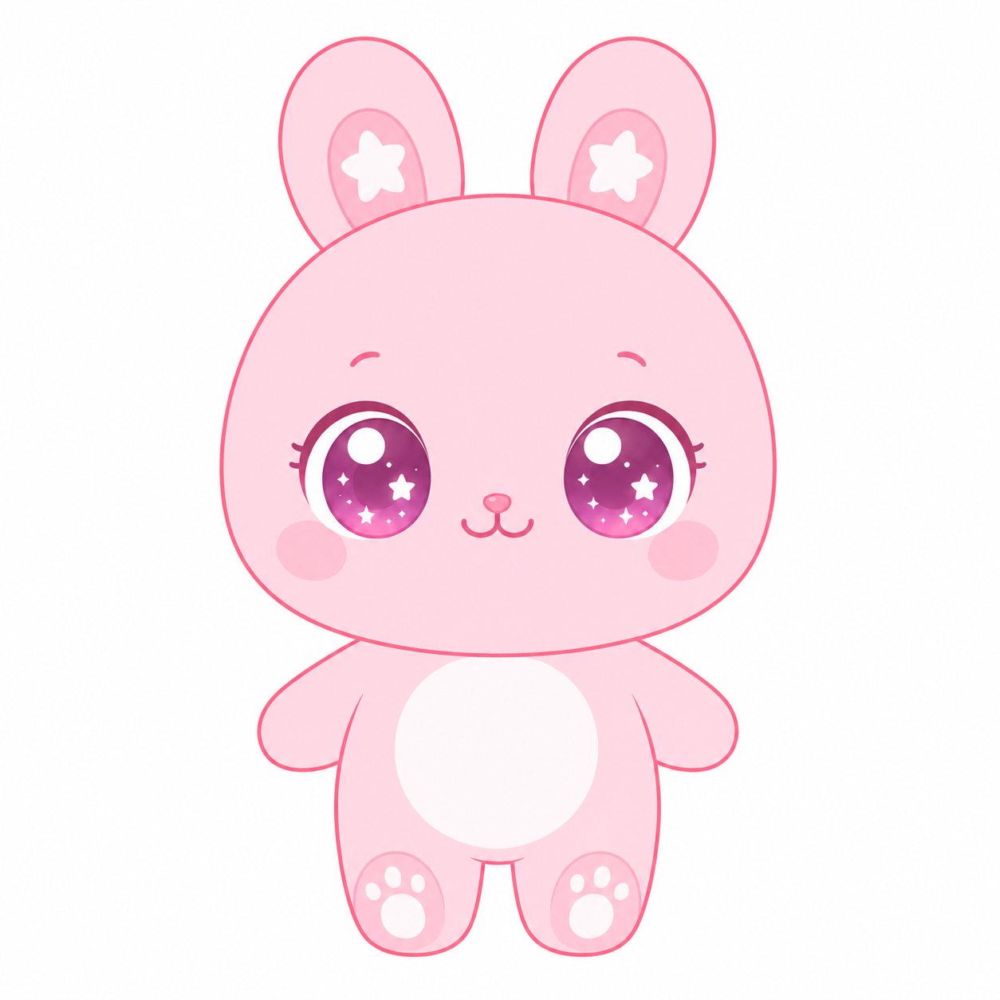
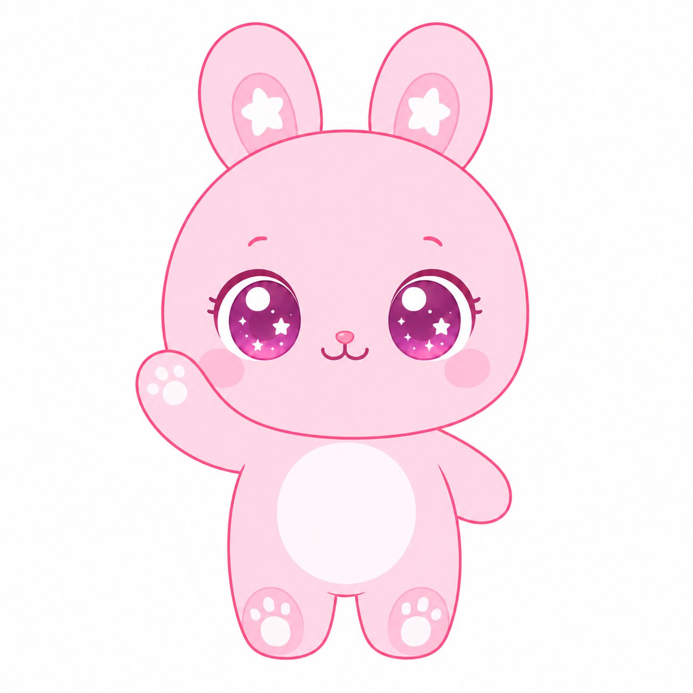
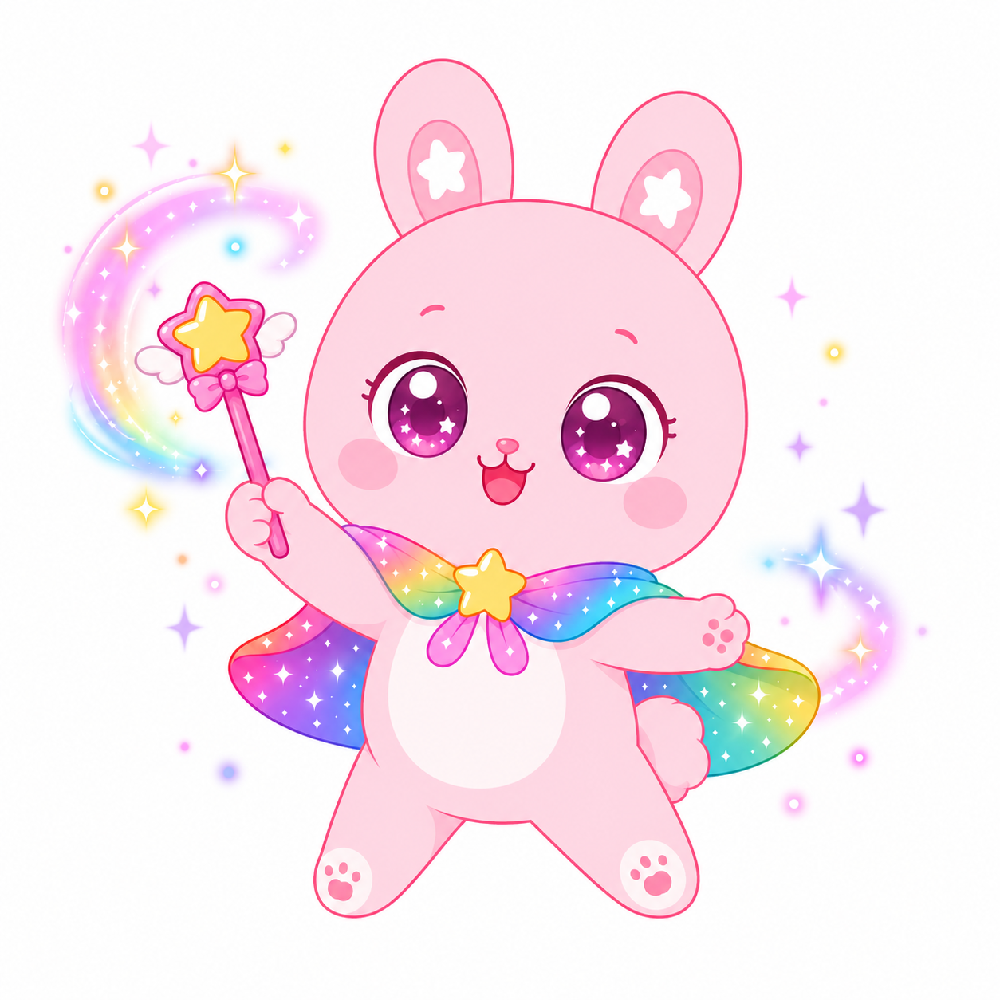
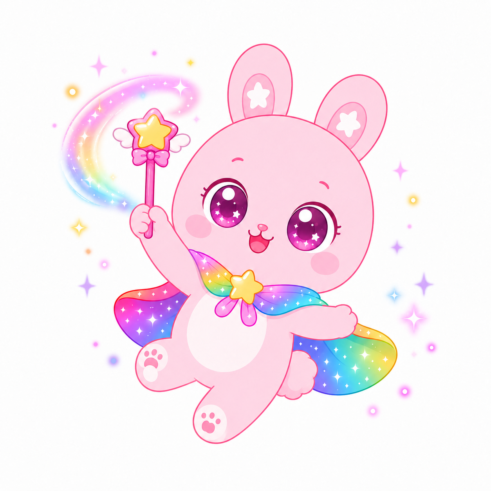

📱
화면을 가로로 돌려주세요!
레인보우 스케치북은 가로 모드에서 가장 예뻐요 🌈
건너뛰기 →
✦
✦
✦
✦
옛날 옛날, 우주에
무지개 별나라
가
있었어요 🌈

그곳엔 분홍 토끼
토슴이
가
살고 있었어요 🐰
그런데 어느 날,
별나라의
색이 모두
사라졌어요 💧

토슴이가 멀리 있는
친구를 떠올렸어요.
바로 너!
✨

우리 함께
무지개
를
그려줄래요? 🎨

🌈 레인보우 스케치북
토슴이와 함께하는 우주 그림 놀이
시작하기 ✨
‹
›
v0.4 · onboarding